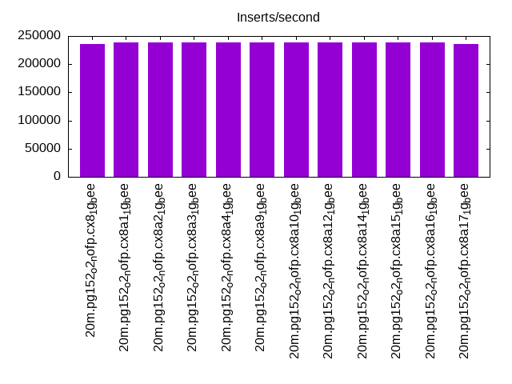
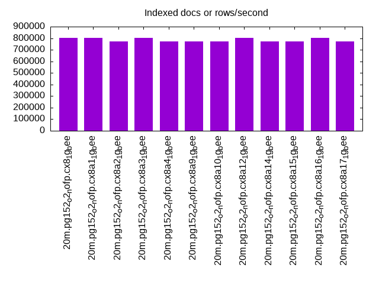
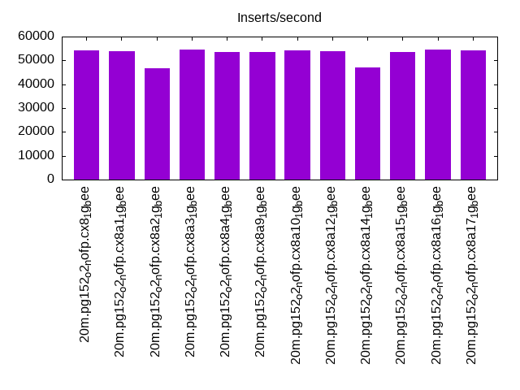
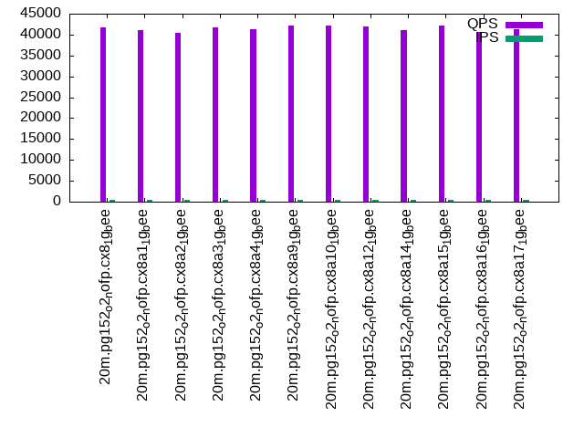
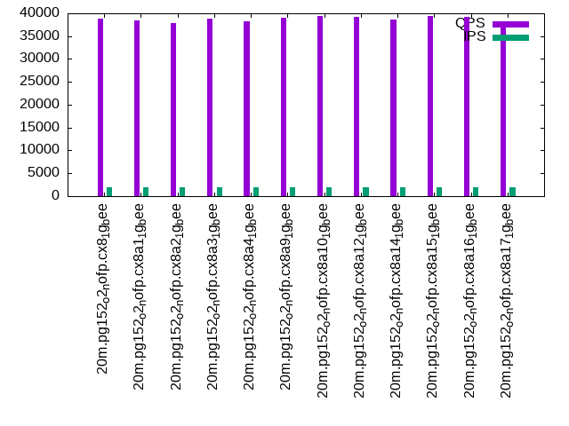
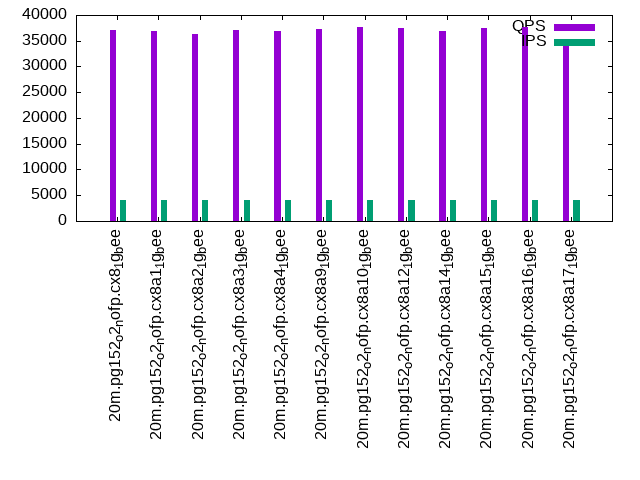

This is a report for the insert benchmark with 20M docs and 4 client(s). It is generated by scripts (bash, awk, sed) and Tufte might not be impressed. An overview of the insert benchmark is here and a short update is here. Below, by DBMS, I mean DBMS+version.config. An example is my8020.c10b40 where my means MySQL, 8020 is version 8.0.20 and c10b40 is the name for the configuration file.
The test server has 8 AMD cores, 16G RAM and an NVMe SSD. It is described here as the Beelink. The benchmark was run with 4 clients and there were 1 or 3 connections per client (1 for queries or inserts without rate limits, 1+1 for rate limited inserts+deletes). It uses 4 tables, one per client. It loads 20M rows per table without secondary indexes, creates secondary indexes, then inserts 50M rows per table with a delete per insert to avoid growing the table. It then does 3 read+write tests for 1800s each that do queries as fast as possible with 100, 500 and then 1000 inserts/second/client concurrent with the queries and 1000 deletes/second to avoid growing the table. The database is cached by the OS page cache but not by the storage engine. Clients and the DBMS share one server. The per-database configs are in the per-database subdirectories here.
The tested DBMS are:
The numbers are inserts/s for l.i0 and l.i1, indexed docs (or rows) /s for l.x and queries/s for q*.2. The values are the average rate over the entire test for inserts (IPS) and queries (QPS). The range of values for IPS and QPS is split into 3 parts: bottom 25%, middle 50%, top 25%. Values in the bottom 25% have a red background, values in the top 25% have a green background and values in the middle have no color. A gray background is used for values that can be ignored because the DBMS did not sustain the target insert rate. Red backgrounds are not used when the minimum value is within 80% of the max value.
| dbms | l.i0 | l.x | l.i1 | q100.1 | q500.1 | q1000.1 |
|---|---|---|---|---|---|---|
| 20m.pg152_o2_nofp.cx8_1g_bee | 235294 | 804000 | 54110 | 41715 | 38739 | 37049 |
| 20m.pg152_o2_nofp.cx8a1_1g_bee | 238095 | 804000 | 53886 | 41009 | 38409 | 36938 |
| 20m.pg152_o2_nofp.cx8a2_1g_bee | 238095 | 773077 | 46553 | 40314 | 37909 | 36319 |
| 20m.pg152_o2_nofp.cx8a3_1g_bee | 238095 | 804000 | 54393 | 41737 | 38814 | 37150 |
| 20m.pg152_o2_nofp.cx8a4_1g_bee | 238095 | 773077 | 53608 | 41201 | 38232 | 36845 |
| 20m.pg152_o2_nofp.cx8a9_1g_bee | 238095 | 773077 | 53608 | 42116 | 39026 | 37186 |
| 20m.pg152_o2_nofp.cx8a10_1g_bee | 238095 | 773077 | 54336 | 42218 | 39332 | 37646 |
| 20m.pg152_o2_nofp.cx8a12_1g_bee | 238095 | 804000 | 53886 | 42049 | 39151 | 37469 |
| 20m.pg152_o2_nofp.cx8a14_1g_bee | 238095 | 773077 | 47101 | 41053 | 38727 | 36933 |
| 20m.pg152_o2_nofp.cx8a15_1g_bee | 238095 | 773077 | 53664 | 42063 | 39436 | 37490 |
| 20m.pg152_o2_nofp.cx8a16_1g_bee | 238095 | 804000 | 54450 | 40581 | 39294 | 37646 |
| 20m.pg152_o2_nofp.cx8a17_1g_bee | 235294 | 773077 | 54223 | 41329 | 37678 | 34686 |
This table has relative throughput, throughput for the DBMS relative to the DBMS in the first line, using the absolute throughput from the previous table.
| dbms | l.i0 | l.x | l.i1 | q100.1 | q500.1 | q1000.1 |
|---|---|---|---|---|---|---|
| 20m.pg152_o2_nofp.cx8_1g_bee | 1.00 | 1.00 | 1.00 | 1.00 | 1.00 | 1.00 |
| 20m.pg152_o2_nofp.cx8a1_1g_bee | 1.01 | 1.00 | 1.00 | 0.98 | 0.99 | 1.00 |
| 20m.pg152_o2_nofp.cx8a2_1g_bee | 1.01 | 0.96 | 0.86 | 0.97 | 0.98 | 0.98 |
| 20m.pg152_o2_nofp.cx8a3_1g_bee | 1.01 | 1.00 | 1.01 | 1.00 | 1.00 | 1.00 |
| 20m.pg152_o2_nofp.cx8a4_1g_bee | 1.01 | 0.96 | 0.99 | 0.99 | 0.99 | 0.99 |
| 20m.pg152_o2_nofp.cx8a9_1g_bee | 1.01 | 0.96 | 0.99 | 1.01 | 1.01 | 1.00 |
| 20m.pg152_o2_nofp.cx8a10_1g_bee | 1.01 | 0.96 | 1.00 | 1.01 | 1.02 | 1.02 |
| 20m.pg152_o2_nofp.cx8a12_1g_bee | 1.01 | 1.00 | 1.00 | 1.01 | 1.01 | 1.01 |
| 20m.pg152_o2_nofp.cx8a14_1g_bee | 1.01 | 0.96 | 0.87 | 0.98 | 1.00 | 1.00 |
| 20m.pg152_o2_nofp.cx8a15_1g_bee | 1.01 | 0.96 | 0.99 | 1.01 | 1.02 | 1.01 |
| 20m.pg152_o2_nofp.cx8a16_1g_bee | 1.01 | 1.00 | 1.01 | 0.97 | 1.01 | 1.02 |
| 20m.pg152_o2_nofp.cx8a17_1g_bee | 1.00 | 0.96 | 1.00 | 0.99 | 0.97 | 0.94 |
This lists the average rate of inserts/s for the tests that do inserts concurrent with queries. For such tests the query rate is listed in the table above. The read+write tests are setup so that the insert rate should match the target rate every second. Cells that are not at least 95% of the target have a red background to indicate a failure to satisfy the target.
| dbms | q100.1 | q500.1 | q1000.1 |
|---|---|---|---|
| pg152_o2_nofp.cx8_1g_bee | 399 | 1994 | 3989 |
| pg152_o2_nofp.cx8a1_1g_bee | 399 | 1994 | 3989 |
| pg152_o2_nofp.cx8a2_1g_bee | 399 | 1994 | 3987 |
| pg152_o2_nofp.cx8a3_1g_bee | 399 | 1993 | 3987 |
| pg152_o2_nofp.cx8a4_1g_bee | 399 | 1994 | 3989 |
| pg152_o2_nofp.cx8a9_1g_bee | 399 | 1994 | 3989 |
| pg152_o2_nofp.cx8a10_1g_bee | 399 | 1993 | 3989 |
| pg152_o2_nofp.cx8a12_1g_bee | 399 | 1994 | 3989 |
| pg152_o2_nofp.cx8a14_1g_bee | 399 | 1994 | 3989 |
| pg152_o2_nofp.cx8a15_1g_bee | 399 | 1993 | 3987 |
| pg152_o2_nofp.cx8a16_1g_bee | 399 | 1993 | 3989 |
| pg152_o2_nofp.cx8a17_1g_bee | 399 | 1993 | 3989 |
| target | 400 | 2000 | 4000 |
l.i0: load without secondary indexes. Graphs for performance per 1-second interval are here.
Average throughput:
Insert response time histogram: each cell has the percentage of responses that take <= the time in the header and max is the max response time in seconds. For the max column values in the top 25% of the range have a red background and in the bottom 25% of the range have a green background. The red background is not used when the min value is within 80% of the max value.
| dbms | 256us | 1ms | 4ms | 16ms | 64ms | 256ms | 1s | 4s | 16s | gt | max |
|---|---|---|---|---|---|---|---|---|---|---|---|
| pg152_o2_nofp.cx8_1g_bee | 99.909 | 0.091 | 0.014 | ||||||||
| pg152_o2_nofp.cx8a1_1g_bee | 99.916 | 0.085 | 0.013 | ||||||||
| pg152_o2_nofp.cx8a2_1g_bee | 99.919 | 0.081 | 0.012 | ||||||||
| pg152_o2_nofp.cx8a3_1g_bee | 99.916 | 0.084 | 0.015 | ||||||||
| pg152_o2_nofp.cx8a4_1g_bee | 99.928 | 0.072 | 0.014 | ||||||||
| pg152_o2_nofp.cx8a9_1g_bee | 99.921 | 0.079 | 0.011 | ||||||||
| pg152_o2_nofp.cx8a10_1g_bee | 99.918 | 0.082 | 0.011 | ||||||||
| pg152_o2_nofp.cx8a12_1g_bee | 99.929 | 0.071 | 0.001 | 0.021 | |||||||
| pg152_o2_nofp.cx8a14_1g_bee | 99.912 | 0.089 | 0.011 | ||||||||
| pg152_o2_nofp.cx8a15_1g_bee | 99.910 | 0.089 | 0.011 | ||||||||
| pg152_o2_nofp.cx8a16_1g_bee | 99.906 | 0.092 | 0.001 | 0.021 | |||||||
| pg152_o2_nofp.cx8a17_1g_bee | 99.925 | 0.075 | 0.013 |
Performance metrics for the DBMS listed above. Some are normalized by throughput, others are not. Legend for results is here.
ips qps rps rmbps wps wmbps rpq rkbpq wpi wkbpi csps cpups cspq cpupq dbgb1 dbgb2 rss maxop p50 p99 tag 235294 0 0 0.0 749.5 113.8 0.000 0.000 0.003 0.495 23672 71.7 0.101 24 1.9 5.2 0.0 0.014 70623 18186 20m.pg152_o2_nofp.cx8_1g_bee 238095 0 0 0.0 716.8 114.1 0.000 0.000 0.003 0.491 23216 72.0 0.098 24 1.9 5.2 1.0 0.013 70953 12387 20m.pg152_o2_nofp.cx8a1_1g_bee 238095 0 0 0.0 714.7 113.7 0.000 0.000 0.003 0.489 23521 71.8 0.099 24 1.9 5.2 1.0 0.012 70624 21576 20m.pg152_o2_nofp.cx8a2_1g_bee 238095 0 0 0.0 690.6 113.4 0.000 0.000 0.003 0.488 23482 72.2 0.099 24 1.9 5.2 0.0 0.015 70424 48347 20m.pg152_o2_nofp.cx8a3_1g_bee 238095 0 0 0.0 670.9 112.7 0.000 0.000 0.003 0.485 23325 71.7 0.098 24 1.9 5.2 0.0 0.014 71023 49746 20m.pg152_o2_nofp.cx8a4_1g_bee 238095 0 0 0.0 711.3 113.0 0.000 0.000 0.003 0.486 23115 71.7 0.097 24 1.9 5.2 1.0 0.011 70124 31679 20m.pg152_o2_nofp.cx8a9_1g_bee 238095 0 0 0.0 712.9 113.4 0.000 0.000 0.003 0.488 23125 72.2 0.097 24 1.9 5.2 1.0 0.011 70124 500 20m.pg152_o2_nofp.cx8a10_1g_bee 238095 0 0 0.0 715.8 113.6 0.000 0.000 0.003 0.489 23027 72.2 0.097 24 1.9 5.2 0.0 0.021 70623 15783 20m.pg152_o2_nofp.cx8a12_1g_bee 238095 0 0 0.0 650.7 112.8 0.000 0.000 0.003 0.485 23034 72.2 0.097 24 1.9 5.2 0.0 0.011 70424 49346 20m.pg152_o2_nofp.cx8a14_1g_bee 238095 0 0 0.0 706.9 113.7 0.000 0.000 0.003 0.489 23020 71.8 0.097 24 1.9 5.2 0.0 0.011 71122 3396 20m.pg152_o2_nofp.cx8a15_1g_bee 238095 0 0 0.0 716.1 113.5 0.000 0.000 0.003 0.488 23118 72.1 0.097 24 1.9 5.2 0.0 0.021 70324 60135 20m.pg152_o2_nofp.cx8a16_1g_bee 235294 0 0 0.0 727.1 109.8 0.000 0.000 0.003 0.478 22506 70.4 0.096 24 1.9 5.2 0.0 0.013 70224 35162 20m.pg152_o2_nofp.cx8a17_1g_bee
l.x: create secondary indexes.
Average throughput:
Performance metrics for the DBMS listed above. Some are normalized by throughput, others are not. Legend for results is here.
ips qps rps rmbps wps wmbps rpq rkbpq wpi wkbpi csps cpups cspq cpupq dbgb1 dbgb2 rss maxop p50 p99 tag 804000 0 0 0.0 631.7 217.8 0.000 0.000 0.001 0.277 2473 37.5 0.003 4 3.7 8.6 0.0 0.003 NA NA 20m.pg152_o2_nofp.cx8_1g_bee 804000 0 0 0.0 554.3 165.4 0.000 0.000 0.001 0.211 2534 38.2 0.003 4 3.7 8.0 0.0 0.003 NA NA 20m.pg152_o2_nofp.cx8a1_1g_bee 773077 0 0 0.0 648.4 205.8 0.000 0.000 0.001 0.273 2453 37.3 0.003 4 3.7 8.6 0.0 0.003 NA NA 20m.pg152_o2_nofp.cx8a2_1g_bee 804000 0 0 0.0 650.1 215.2 0.000 0.000 0.001 0.274 2487 37.2 0.003 4 3.7 8.6 0.0 0.004 NA NA 20m.pg152_o2_nofp.cx8a3_1g_bee 773077 0 0 0.0 637.4 201.1 0.000 0.000 0.001 0.266 2216 37.8 0.003 4 3.7 8.6 0.0 0.003 NA NA 20m.pg152_o2_nofp.cx8a4_1g_bee 773077 0 0 0.0 652.4 207.6 0.000 0.000 0.001 0.275 2177 37.3 0.003 4 3.7 8.6 0.0 0.004 NA NA 20m.pg152_o2_nofp.cx8a9_1g_bee 773077 0 0 0.0 624.5 194.6 0.000 0.000 0.001 0.258 2233 37.3 0.003 4 3.7 8.6 0.0 0.003 NA NA 20m.pg152_o2_nofp.cx8a10_1g_bee 804000 0 0 0.0 659.6 214.4 0.000 0.000 0.001 0.273 2323 37.2 0.003 4 3.7 8.6 0.0 0.003 NA NA 20m.pg152_o2_nofp.cx8a12_1g_bee 773077 0 0 0.0 579.3 197.3 0.000 0.000 0.001 0.261 2447 37.3 0.003 4 3.7 8.6 0.0 0.003 NA NA 20m.pg152_o2_nofp.cx8a14_1g_bee 773077 0 0 0.0 583.7 194.3 0.000 0.000 0.001 0.257 2354 37.8 0.003 4 3.7 8.6 0.0 0.003 NA NA 20m.pg152_o2_nofp.cx8a15_1g_bee 804000 0 0 0.0 650.3 207.0 0.000 0.000 0.001 0.264 2323 37.0 0.003 4 3.7 8.6 0.0 0.003 NA NA 20m.pg152_o2_nofp.cx8a16_1g_bee 773077 0 0 0.0 643.5 206.7 0.000 0.000 0.001 0.274 2438 37.5 0.003 4 3.7 8.6 0.0 0.003 NA NA 20m.pg152_o2_nofp.cx8a17_1g_bee
l.i1: continue load after secondary indexes created. Graphs for performance per 1-second interval are here.
Average throughput:
Insert response time histogram: each cell has the percentage of responses that take <= the time in the header and max is the max response time in seconds. For the max column values in the top 25% of the range have a red background and in the bottom 25% of the range have a green background. The red background is not used when the min value is within 80% of the max value.
| dbms | 256us | 1ms | 4ms | 16ms | 64ms | 256ms | 1s | 4s | 16s | gt | max |
|---|---|---|---|---|---|---|---|---|---|---|---|
| pg152_o2_nofp.cx8_1g_bee | 88.904 | 11.051 | 0.039 | 0.006 | 0.155 | ||||||
| pg152_o2_nofp.cx8a1_1g_bee | 88.724 | 11.239 | 0.032 | 0.005 | 0.164 | ||||||
| pg152_o2_nofp.cx8a2_1g_bee | 59.601 | 40.222 | 0.131 | 0.046 | 0.109 | ||||||
| pg152_o2_nofp.cx8a3_1g_bee | 89.231 | 10.740 | 0.027 | 0.002 | 0.127 | ||||||
| pg152_o2_nofp.cx8a4_1g_bee | 89.126 | 10.809 | 0.055 | 0.010 | 0.199 | ||||||
| pg152_o2_nofp.cx8a9_1g_bee | 89.223 | 10.715 | 0.052 | 0.010 | 0.178 | ||||||
| pg152_o2_nofp.cx8a10_1g_bee | 89.119 | 10.813 | 0.057 | 0.010 | 0.172 | ||||||
| pg152_o2_nofp.cx8a12_1g_bee | 89.078 | 10.883 | 0.029 | 0.009 | 0.001 | 0.409 | |||||
| pg152_o2_nofp.cx8a14_1g_bee | 58.320 | 41.514 | 0.119 | 0.047 | 0.097 | ||||||
| pg152_o2_nofp.cx8a15_1g_bee | 88.309 | 11.499 | 0.179 | 0.013 | 0.154 | ||||||
| pg152_o2_nofp.cx8a16_1g_bee | 89.699 | 10.206 | 0.056 | 0.039 | 0.214 | ||||||
| pg152_o2_nofp.cx8a17_1g_bee | 91.462 | 8.436 | 0.049 | 0.053 | nonzero | 0.306 |
Delete response time histogram: each cell has the percentage of responses that take <= the time in the header and max is the max response time in seconds. For the max column values in the top 25% of the range have a red background and in the bottom 25% of the range have a green background. The red background is not used when the min value is within 80% of the max value.
| dbms | 256us | 1ms | 4ms | 16ms | 64ms | 256ms | 1s | 4s | 16s | gt | max |
|---|---|---|---|---|---|---|---|---|---|---|---|
| pg152_o2_nofp.cx8_1g_bee | 1.838 | 89.698 | 2.375 | 6.037 | 0.049 | 0.002 | 0.142 | ||||
| pg152_o2_nofp.cx8a1_1g_bee | 1.840 | 89.728 | 3.048 | 5.329 | 0.052 | 0.001 | 0.120 | ||||
| pg152_o2_nofp.cx8a2_1g_bee | 0.854 | 91.586 | 2.253 | 5.255 | 0.052 | 0.001 | 0.080 | ||||
| pg152_o2_nofp.cx8a3_1g_bee | 2.038 | 89.876 | 2.972 | 5.062 | 0.052 | nonzero | 0.078 | ||||
| pg152_o2_nofp.cx8a4_1g_bee | 2.052 | 89.889 | 3.094 | 4.899 | 0.065 | 0.002 | 0.192 | ||||
| pg152_o2_nofp.cx8a9_1g_bee | 1.971 | 89.487 | 3.198 | 5.272 | 0.067 | 0.004 | 0.193 | ||||
| pg152_o2_nofp.cx8a10_1g_bee | 1.869 | 90.383 | 3.163 | 4.530 | 0.052 | 0.003 | 0.227 | ||||
| pg152_o2_nofp.cx8a12_1g_bee | 1.958 | 89.857 | 3.274 | 4.862 | 0.046 | 0.003 | nonzero | 0.404 | |||
| pg152_o2_nofp.cx8a14_1g_bee | 1.047 | 91.045 | 2.310 | 5.537 | 0.060 | 0.001 | 0.101 | ||||
| pg152_o2_nofp.cx8a15_1g_bee | 1.963 | 89.896 | 3.470 | 4.580 | 0.088 | 0.004 | 0.150 | ||||
| pg152_o2_nofp.cx8a16_1g_bee | 2.447 | 90.089 | 4.405 | 2.175 | 0.867 | 0.017 | nonzero | 0.264 | |||
| pg152_o2_nofp.cx8a17_1g_bee | 2.232 | 90.822 | 4.162 | 1.728 | 1.044 | 0.012 | 0.171 |
Performance metrics for the DBMS listed above. Some are normalized by throughput, others are not. Legend for results is here.
ips qps rps rmbps wps wmbps rpq rkbpq wpi wkbpi csps cpups cspq cpupq dbgb1 dbgb2 rss maxop p50 p99 tag 54110 0 36 0.5 48461.3 828.7 0.001 0.009 0.896 15.683 29092 70.0 0.538 103 6.2 38.2 0.2 0.155 14540 4395 20m.pg152_o2_nofp.cx8_1g_bee 53886 0 55 0.4 47149.4 816.6 0.001 0.008 0.875 15.518 28380 69.5 0.527 103 6.1 36.0 0.2 0.164 14634 4195 20m.pg152_o2_nofp.cx8a1_1g_bee 46553 0 56 0.5 97193.0 838.9 0.001 0.012 2.088 18.452 24950 66.1 0.536 114 6.1 38.3 0.3 0.109 12286 4345 20m.pg152_o2_nofp.cx8a2_1g_bee 54393 0 51 0.6 47230.4 820.9 0.001 0.011 0.868 15.453 28837 69.6 0.530 102 6.1 34.5 0.0 0.127 14634 4295 20m.pg152_o2_nofp.cx8a3_1g_bee 53608 0 69 0.7 47437.0 822.6 0.001 0.013 0.885 15.713 28545 68.9 0.532 103 6.2 38.2 0.3 0.199 14484 4197 20m.pg152_o2_nofp.cx8a4_1g_bee 53608 0 71 0.7 46952.3 822.0 0.001 0.013 0.876 15.702 28398 69.4 0.530 104 6.1 38.2 1.0 0.178 14634 4345 20m.pg152_o2_nofp.cx8a9_1g_bee 54336 0 71 0.7 47455.1 832.3 0.001 0.013 0.873 15.684 28803 69.1 0.530 102 6.1 38.2 0.7 0.172 14534 4097 20m.pg152_o2_nofp.cx8a10_1g_bee 53886 0 82 0.8 46974.7 821.2 0.002 0.015 0.872 15.606 28539 68.8 0.530 102 6.2 38.3 0.0 0.409 14534 4047 20m.pg152_o2_nofp.cx8a12_1g_bee 47101 0 40 0.5 95786.7 830.9 0.001 0.010 2.034 18.064 25281 66.5 0.537 113 6.1 38.2 0.2 0.097 12486 4545 20m.pg152_o2_nofp.cx8a14_1g_bee 53664 0 109 1.0 47281.8 820.8 0.002 0.020 0.881 15.663 28701 68.7 0.535 102 6.2 16.2 0.1 0.154 14484 4245 20m.pg152_o2_nofp.cx8a15_1g_bee 54450 0 117 0.8 45765.1 824.1 0.002 0.015 0.840 15.498 28361 68.4 0.521 100 6.7 39.2 1.0 0.214 14634 2647 20m.pg152_o2_nofp.cx8a16_1g_bee 54223 0 124 1.2 40525.8 831.6 0.002 0.022 0.747 15.704 27845 67.6 0.514 100 6.9 39.4 0.0 0.306 14640 2198 20m.pg152_o2_nofp.cx8a17_1g_bee
q100.1: range queries with 100 insert/s per client. Graphs for performance per 1-second interval are here.
Average throughput:
Query response time histogram: each cell has the percentage of responses that take <= the time in the header and max is the max response time in seconds. For max values in the top 25% of the range have a red background and in the bottom 25% of the range have a green background. The red background is not used when the min value is within 80% of the max value.
| dbms | 256us | 1ms | 4ms | 16ms | 64ms | 256ms | 1s | 4s | 16s | gt | max |
|---|---|---|---|---|---|---|---|---|---|---|---|
| pg152_o2_nofp.cx8_1g_bee | 99.974 | 0.017 | 0.009 | nonzero | 0.016 | ||||||
| pg152_o2_nofp.cx8a1_1g_bee | 99.967 | 0.023 | 0.010 | nonzero | 0.011 | ||||||
| pg152_o2_nofp.cx8a2_1g_bee | 99.968 | 0.023 | 0.009 | nonzero | 0.012 | ||||||
| pg152_o2_nofp.cx8a3_1g_bee | 99.979 | 0.013 | 0.008 | nonzero | 0.010 | ||||||
| pg152_o2_nofp.cx8a4_1g_bee | 99.970 | 0.021 | 0.009 | nonzero | 0.012 | ||||||
| pg152_o2_nofp.cx8a9_1g_bee | 99.963 | 0.026 | 0.011 | nonzero | 0.011 | ||||||
| pg152_o2_nofp.cx8a10_1g_bee | 99.975 | 0.016 | 0.008 | nonzero | 0.012 | ||||||
| pg152_o2_nofp.cx8a12_1g_bee | 99.974 | 0.017 | 0.009 | nonzero | 0.012 | ||||||
| pg152_o2_nofp.cx8a14_1g_bee | 99.967 | 0.023 | 0.009 | nonzero | 0.011 | ||||||
| pg152_o2_nofp.cx8a15_1g_bee | 99.977 | 0.014 | 0.008 | nonzero | 0.012 | ||||||
| pg152_o2_nofp.cx8a16_1g_bee | 99.969 | 0.022 | 0.009 | nonzero | 0.011 | ||||||
| pg152_o2_nofp.cx8a17_1g_bee | 99.973 | 0.018 | 0.009 | nonzero | 0.009 |
Insert response time histogram: each cell has the percentage of responses that take <= the time in the header and max is the max response time in seconds. For max values in the top 25% of the range have a red background and in the bottom 25% of the range have a green background. The red background is not used when the min value is within 80% of the max value.
| dbms | 256us | 1ms | 4ms | 16ms | 64ms | 256ms | 1s | 4s | 16s | gt | max |
|---|---|---|---|---|---|---|---|---|---|---|---|
| pg152_o2_nofp.cx8_1g_bee | 99.764 | 0.236 | 0.013 | ||||||||
| pg152_o2_nofp.cx8a1_1g_bee | 99.042 | 0.958 | 0.013 | ||||||||
| pg152_o2_nofp.cx8a2_1g_bee | 99.347 | 0.653 | 0.013 | ||||||||
| pg152_o2_nofp.cx8a3_1g_bee | 99.660 | 0.340 | 0.012 | ||||||||
| pg152_o2_nofp.cx8a4_1g_bee | 99.778 | 0.222 | 0.011 | ||||||||
| pg152_o2_nofp.cx8a9_1g_bee | 99.604 | 0.396 | 0.014 | ||||||||
| pg152_o2_nofp.cx8a10_1g_bee | 99.896 | 0.104 | 0.012 | ||||||||
| pg152_o2_nofp.cx8a12_1g_bee | 99.840 | 0.160 | 0.009 | ||||||||
| pg152_o2_nofp.cx8a14_1g_bee | 99.465 | 0.535 | 0.008 | ||||||||
| pg152_o2_nofp.cx8a15_1g_bee | 99.764 | 0.236 | 0.008 | ||||||||
| pg152_o2_nofp.cx8a16_1g_bee | 99.771 | 0.229 | 0.012 | ||||||||
| pg152_o2_nofp.cx8a17_1g_bee | 99.778 | 0.222 | 0.008 |
Delete response time histogram: each cell has the percentage of responses that take <= the time in the header and max is the max response time in seconds. For max values in the top 25% of the range have a red background and in the bottom 25% of the range have a green background. The red background is not used when the min value is within 80% of the max value.
| dbms | 256us | 1ms | 4ms | 16ms | 64ms | 256ms | 1s | 4s | 16s | gt | max |
|---|---|---|---|---|---|---|---|---|---|---|---|
| pg152_o2_nofp.cx8_1g_bee | 12.201 | 78.194 | 9.556 | 0.049 | 0.006 | ||||||
| pg152_o2_nofp.cx8a1_1g_bee | 7.729 | 75.243 | 16.549 | 0.479 | 0.009 | ||||||
| pg152_o2_nofp.cx8a2_1g_bee | 12.500 | 78.639 | 8.778 | 0.083 | 0.012 | ||||||
| pg152_o2_nofp.cx8a3_1g_bee | 13.146 | 74.097 | 12.674 | 0.083 | 0.009 | ||||||
| pg152_o2_nofp.cx8a4_1g_bee | 11.438 | 76.653 | 11.632 | 0.278 | 0.010 | ||||||
| pg152_o2_nofp.cx8a9_1g_bee | 15.632 | 70.951 | 13.354 | 0.062 | 0.006 | ||||||
| pg152_o2_nofp.cx8a10_1g_bee | 11.701 | 80.139 | 8.160 | 0.004 | |||||||
| pg152_o2_nofp.cx8a12_1g_bee | 10.681 | 69.049 | 20.139 | 0.132 | 0.009 | ||||||
| pg152_o2_nofp.cx8a14_1g_bee | 11.361 | 67.958 | 20.375 | 0.306 | 0.008 | ||||||
| pg152_o2_nofp.cx8a15_1g_bee | 10.424 | 80.153 | 9.354 | 0.069 | 0.007 | ||||||
| pg152_o2_nofp.cx8a16_1g_bee | 12.743 | 78.875 | 8.312 | 0.062 | 0.007 | 0.022 | |||||
| pg152_o2_nofp.cx8a17_1g_bee | 12.590 | 78.549 | 8.812 | 0.049 | 0.005 |
Performance metrics for the DBMS listed above. Some are normalized by throughput, others are not. Legend for results is here.
ips qps rps rmbps wps wmbps rpq rkbpq wpi wkbpi csps cpups cspq cpupq dbgb1 dbgb2 rss maxop p50 p99 tag 399 41715 0 0.0 1704.3 14.8 0.000 0.000 4.273 38.097 159122 50.5 3.815 97 6.2 38.5 0.0 0.016 10564 8615 20m.pg152_o2_nofp.cx8_1g_bee 399 41009 0 0.0 1705.5 14.4 0.000 0.000 4.277 36.983 156345 50.4 3.812 98 6.1 36.3 0.0 0.011 10483 8598 20m.pg152_o2_nofp.cx8a1_1g_bee 399 40314 0 0.0 1699.4 14.3 0.000 0.000 4.263 36.723 153853 50.5 3.816 100 6.1 38.6 0.0 0.012 10217 8295 20m.pg152_o2_nofp.cx8a2_1g_bee 399 41737 0 0.0 1703.9 14.2 0.000 0.000 4.273 36.352 159161 50.4 3.813 97 6.1 34.8 0.0 0.010 10532 9126 20m.pg152_o2_nofp.cx8a3_1g_bee 399 41201 0 0.0 1704.5 14.9 0.000 0.000 4.274 38.253 157082 50.4 3.813 98 6.2 38.5 0.0 0.012 10405 8090 20m.pg152_o2_nofp.cx8a4_1g_bee 399 42116 0 0.0 1732.0 15.5 0.000 0.000 4.343 39.779 160728 50.5 3.816 96 6.1 38.4 0.0 0.011 10729 8841 20m.pg152_o2_nofp.cx8a9_1g_bee 399 42218 0 0.0 1703.9 14.6 0.000 0.000 4.272 37.510 161042 50.5 3.815 96 6.1 38.5 0.0 0.012 10616 8906 20m.pg152_o2_nofp.cx8a10_1g_bee 399 42049 0 0.0 1700.2 15.0 0.000 0.000 4.263 38.454 160359 50.5 3.814 96 6.2 38.6 0.0 0.012 10692 8922 20m.pg152_o2_nofp.cx8a12_1g_bee 399 41053 0 0.0 1734.7 14.6 0.000 0.000 4.350 37.373 156530 50.4 3.813 98 6.1 38.5 0.0 0.011 10437 8455 20m.pg152_o2_nofp.cx8a14_1g_bee 399 42063 0 0.0 1700.6 14.0 0.000 0.000 4.267 35.928 160472 50.4 3.815 96 6.2 16.2 0.0 0.012 10724 8918 20m.pg152_o2_nofp.cx8a15_1g_bee 399 40581 1 0.0 1703.7 14.3 0.000 0.000 4.274 36.725 154855 50.4 3.816 99 6.7 39.5 0.0 0.011 10325 8471 20m.pg152_o2_nofp.cx8a16_1g_bee 399 41329 0 0.0 1698.1 14.9 0.000 0.000 4.258 38.349 157669 50.5 3.815 98 6.9 39.7 0.0 0.009 10405 8711 20m.pg152_o2_nofp.cx8a17_1g_bee
q500.1: range queries with 500 insert/s per client. Graphs for performance per 1-second interval are here.
Average throughput:
Query response time histogram: each cell has the percentage of responses that take <= the time in the header and max is the max response time in seconds. For max values in the top 25% of the range have a red background and in the bottom 25% of the range have a green background. The red background is not used when the min value is within 80% of the max value.
| dbms | 256us | 1ms | 4ms | 16ms | 64ms | 256ms | 1s | 4s | 16s | gt | max |
|---|---|---|---|---|---|---|---|---|---|---|---|
| pg152_o2_nofp.cx8_1g_bee | 99.885 | 0.085 | 0.025 | 0.005 | nonzero | 0.025 | |||||
| pg152_o2_nofp.cx8a1_1g_bee | 99.870 | 0.100 | 0.025 | 0.005 | nonzero | 0.023 | |||||
| pg152_o2_nofp.cx8a2_1g_bee | 99.883 | 0.087 | 0.025 | 0.005 | nonzero | 0.025 | |||||
| pg152_o2_nofp.cx8a3_1g_bee | 99.898 | 0.073 | 0.023 | 0.005 | nonzero | 0.030 | |||||
| pg152_o2_nofp.cx8a4_1g_bee | 99.875 | 0.094 | 0.025 | 0.005 | nonzero | 0.024 | |||||
| pg152_o2_nofp.cx8a9_1g_bee | 99.856 | 0.111 | 0.027 | 0.005 | nonzero | 0.024 | |||||
| pg152_o2_nofp.cx8a10_1g_bee | 99.891 | 0.081 | 0.024 | 0.005 | nonzero | 0.033 | |||||
| pg152_o2_nofp.cx8a12_1g_bee | 99.893 | 0.079 | 0.024 | 0.004 | nonzero | 0.022 | |||||
| pg152_o2_nofp.cx8a14_1g_bee | 99.883 | 0.086 | 0.025 | 0.005 | nonzero | 0.024 | |||||
| pg152_o2_nofp.cx8a15_1g_bee | 99.882 | 0.089 | 0.024 | 0.005 | nonzero | 0.031 | |||||
| pg152_o2_nofp.cx8a16_1g_bee | 99.895 | 0.076 | 0.025 | 0.004 | nonzero | 0.022 | |||||
| pg152_o2_nofp.cx8a17_1g_bee | 99.843 | 0.121 | 0.030 | 0.006 | nonzero | 0.026 |
Insert response time histogram: each cell has the percentage of responses that take <= the time in the header and max is the max response time in seconds. For max values in the top 25% of the range have a red background and in the bottom 25% of the range have a green background. The red background is not used when the min value is within 80% of the max value.
| dbms | 256us | 1ms | 4ms | 16ms | 64ms | 256ms | 1s | 4s | 16s | gt | max |
|---|---|---|---|---|---|---|---|---|---|---|---|
| pg152_o2_nofp.cx8_1g_bee | 95.513 | 4.364 | 0.124 | 0.029 | |||||||
| pg152_o2_nofp.cx8a1_1g_bee | 93.892 | 5.986 | 0.122 | 0.036 | |||||||
| pg152_o2_nofp.cx8a2_1g_bee | 95.471 | 4.394 | 0.135 | 0.037 | |||||||
| pg152_o2_nofp.cx8a3_1g_bee | 91.279 | 8.543 | 0.178 | 0.034 | |||||||
| pg152_o2_nofp.cx8a4_1g_bee | 92.382 | 7.481 | 0.137 | 0.027 | |||||||
| pg152_o2_nofp.cx8a9_1g_bee | 94.686 | 5.204 | 0.110 | 0.029 | |||||||
| pg152_o2_nofp.cx8a10_1g_bee | 94.994 | 4.881 | 0.125 | 0.041 | |||||||
| pg152_o2_nofp.cx8a12_1g_bee | 97.162 | 2.788 | 0.050 | 0.024 | |||||||
| pg152_o2_nofp.cx8a14_1g_bee | 92.513 | 7.314 | 0.174 | 0.035 | |||||||
| pg152_o2_nofp.cx8a15_1g_bee | 93.654 | 6.224 | 0.122 | 0.042 | |||||||
| pg152_o2_nofp.cx8a16_1g_bee | 95.546 | 4.368 | 0.086 | 0.029 | |||||||
| pg152_o2_nofp.cx8a17_1g_bee | 89.957 | 9.886 | 0.157 | 0.034 |
Delete response time histogram: each cell has the percentage of responses that take <= the time in the header and max is the max response time in seconds. For max values in the top 25% of the range have a red background and in the bottom 25% of the range have a green background. The red background is not used when the min value is within 80% of the max value.
| dbms | 256us | 1ms | 4ms | 16ms | 64ms | 256ms | 1s | 4s | 16s | gt | max |
|---|---|---|---|---|---|---|---|---|---|---|---|
| pg152_o2_nofp.cx8_1g_bee | 37.535 | 39.199 | 8.067 | 14.917 | 0.283 | 0.046 | |||||
| pg152_o2_nofp.cx8a1_1g_bee | 30.128 | 48.967 | 7.385 | 13.383 | 0.137 | 0.028 | |||||
| pg152_o2_nofp.cx8a2_1g_bee | 37.367 | 39.268 | 8.658 | 14.386 | 0.321 | 0.062 | |||||
| pg152_o2_nofp.cx8a3_1g_bee | 38.279 | 38.792 | 8.181 | 14.479 | 0.269 | 0.045 | |||||
| pg152_o2_nofp.cx8a4_1g_bee | 34.885 | 43.521 | 7.821 | 13.597 | 0.176 | 0.040 | |||||
| pg152_o2_nofp.cx8a9_1g_bee | 37.194 | 39.858 | 8.289 | 14.478 | 0.181 | 0.032 | |||||
| pg152_o2_nofp.cx8a10_1g_bee | 38.076 | 38.576 | 8.639 | 14.301 | 0.407 | 0.040 | |||||
| pg152_o2_nofp.cx8a12_1g_bee | 38.040 | 40.450 | 8.662 | 12.787 | 0.060 | 0.042 | |||||
| pg152_o2_nofp.cx8a14_1g_bee | 36.447 | 40.275 | 8.140 | 14.928 | 0.210 | 0.045 | |||||
| pg152_o2_nofp.cx8a15_1g_bee | 37.492 | 37.997 | 8.933 | 15.165 | 0.413 | 0.053 | |||||
| pg152_o2_nofp.cx8a16_1g_bee | 36.664 | 42.208 | 20.422 | 0.686 | 0.019 | 0.026 | |||||
| pg152_o2_nofp.cx8a17_1g_bee | 35.385 | 41.056 | 8.536 | 14.650 | 0.374 | 0.047 |
Performance metrics for the DBMS listed above. Some are normalized by throughput, others are not. Legend for results is here.
ips qps rps rmbps wps wmbps rpq rkbpq wpi wkbpi csps cpups cspq cpupq dbgb1 dbgb2 rss maxop p50 p99 tag 1994 38739 0 0.0 7747.4 63.6 0.000 0.000 3.885 32.676 145756 52.6 3.763 109 6.2 38.5 0.0 0.025 9797 7895 20m.pg152_o2_nofp.cx8_1g_bee 1994 38409 0 0.0 7713.8 62.1 0.000 0.000 3.868 31.862 144694 52.5 3.767 109 6.1 36.3 0.0 0.023 9674 7847 20m.pg152_o2_nofp.cx8a1_1g_bee 1994 37909 2 0.0 7709.7 62.5 0.000 0.000 3.866 32.095 142586 52.6 3.761 111 6.1 38.6 0.0 0.025 9542 7671 20m.pg152_o2_nofp.cx8a2_1g_bee 1993 38814 0 0.0 7742.4 62.3 0.000 0.000 3.884 32.007 146037 52.6 3.762 108 6.1 34.8 0.0 0.030 9797 7815 20m.pg152_o2_nofp.cx8a3_1g_bee 1994 38232 1 0.0 7733.8 63.5 0.000 0.000 3.878 32.587 143872 52.5 3.763 110 6.2 38.5 0.0 0.024 9653 7624 20m.pg152_o2_nofp.cx8a4_1g_bee 1994 39026 4 0.0 7741.2 63.9 0.000 0.000 3.881 32.796 147056 52.5 3.768 108 6.1 38.4 0.0 0.024 9861 7640 20m.pg152_o2_nofp.cx8a9_1g_bee 1993 39332 1 0.0 7755.5 63.7 0.000 0.000 3.891 32.704 148164 52.6 3.767 107 6.1 38.5 0.0 0.033 9957 8007 20m.pg152_o2_nofp.cx8a10_1g_bee 1994 39151 2 0.0 7741.9 62.9 0.000 0.000 3.882 32.281 147412 52.5 3.765 107 6.2 38.6 0.0 0.022 9973 7962 20m.pg152_o2_nofp.cx8a12_1g_bee 1994 38727 0 0.0 7729.2 62.9 0.000 0.000 3.875 32.289 145722 52.5 3.763 108 6.1 38.5 0.0 0.024 9765 7847 20m.pg152_o2_nofp.cx8a14_1g_bee 1993 39436 4 0.0 7745.5 63.0 0.000 0.001 3.886 32.382 148679 52.6 3.770 107 6.2 16.2 0.0 0.031 10037 7752 20m.pg152_o2_nofp.cx8a15_1g_bee 1993 39294 4 0.0 7931.1 67.8 0.000 0.001 3.979 34.823 148322 52.5 3.775 107 6.7 39.5 0.0 0.022 10009 8151 20m.pg152_o2_nofp.cx8a16_1g_bee 1993 37678 4 0.0 6726.4 59.4 0.000 0.001 3.374 30.513 142145 52.3 3.773 111 6.9 39.7 0.0 0.026 9577 7592 20m.pg152_o2_nofp.cx8a17_1g_bee
q1000.1: range queries with 1000 insert/s per client. Graphs for performance per 1-second interval are here.
Average throughput:
Query response time histogram: each cell has the percentage of responses that take <= the time in the header and max is the max response time in seconds. For max values in the top 25% of the range have a red background and in the bottom 25% of the range have a green background. The red background is not used when the min value is within 80% of the max value.
| dbms | 256us | 1ms | 4ms | 16ms | 64ms | 256ms | 1s | 4s | 16s | gt | max |
|---|---|---|---|---|---|---|---|---|---|---|---|
| pg152_o2_nofp.cx8_1g_bee | 99.731 | 0.219 | 0.042 | 0.008 | nonzero | 0.032 | |||||
| pg152_o2_nofp.cx8a1_1g_bee | 99.742 | 0.208 | 0.042 | 0.008 | nonzero | 0.036 | |||||
| pg152_o2_nofp.cx8a2_1g_bee | 99.739 | 0.211 | 0.043 | 0.006 | nonzero | 0.032 | |||||
| pg152_o2_nofp.cx8a3_1g_bee | 99.763 | 0.189 | 0.041 | 0.007 | nonzero | 0.029 | |||||
| pg152_o2_nofp.cx8a4_1g_bee | 99.740 | 0.210 | 0.042 | 0.008 | nonzero | 0.036 | |||||
| pg152_o2_nofp.cx8a9_1g_bee | 99.687 | 0.257 | 0.047 | 0.008 | nonzero | 0.037 | |||||
| pg152_o2_nofp.cx8a10_1g_bee | 99.754 | 0.196 | 0.042 | 0.008 | nonzero | 0.038 | |||||
| pg152_o2_nofp.cx8a12_1g_bee | 99.756 | 0.194 | 0.042 | 0.008 | nonzero | 0.039 | |||||
| pg152_o2_nofp.cx8a14_1g_bee | 99.744 | 0.204 | 0.043 | 0.008 | nonzero | 0.034 | |||||
| pg152_o2_nofp.cx8a15_1g_bee | 99.748 | 0.202 | 0.042 | 0.007 | nonzero | 0.033 | |||||
| pg152_o2_nofp.cx8a16_1g_bee | 99.784 | 0.173 | 0.037 | 0.006 | nonzero | 0.035 | |||||
| pg152_o2_nofp.cx8a17_1g_bee | 99.503 | 0.425 | 0.063 | 0.008 | nonzero | 0.025 |
Insert response time histogram: each cell has the percentage of responses that take <= the time in the header and max is the max response time in seconds. For max values in the top 25% of the range have a red background and in the bottom 25% of the range have a green background. The red background is not used when the min value is within 80% of the max value.
| dbms | 256us | 1ms | 4ms | 16ms | 64ms | 256ms | 1s | 4s | 16s | gt | max |
|---|---|---|---|---|---|---|---|---|---|---|---|
| pg152_o2_nofp.cx8_1g_bee | 87.540 | 12.131 | 0.330 | 0.044 | |||||||
| pg152_o2_nofp.cx8a1_1g_bee | 87.825 | 11.853 | 0.322 | 0.039 | |||||||
| pg152_o2_nofp.cx8a2_1g_bee | 93.526 | 6.312 | 0.162 | 0.045 | |||||||
| pg152_o2_nofp.cx8a3_1g_bee | 88.867 | 10.844 | 0.289 | 0.037 | |||||||
| pg152_o2_nofp.cx8a4_1g_bee | 86.376 | 13.297 | 0.327 | 0.039 | |||||||
| pg152_o2_nofp.cx8a9_1g_bee | 87.494 | 12.184 | 0.322 | 0.038 | |||||||
| pg152_o2_nofp.cx8a10_1g_bee | 88.858 | 10.814 | 0.328 | 0.041 | |||||||
| pg152_o2_nofp.cx8a12_1g_bee | 85.672 | 14.010 | 0.318 | 0.038 | |||||||
| pg152_o2_nofp.cx8a14_1g_bee | 87.251 | 12.452 | 0.297 | 0.038 | |||||||
| pg152_o2_nofp.cx8a15_1g_bee | 87.231 | 12.435 | 0.335 | 0.042 | |||||||
| pg152_o2_nofp.cx8a16_1g_bee | 89.844 | 9.930 | 0.226 | 0.036 | |||||||
| pg152_o2_nofp.cx8a17_1g_bee | 87.748 | 12.094 | 0.158 | 0.034 |
Delete response time histogram: each cell has the percentage of responses that take <= the time in the header and max is the max response time in seconds. For max values in the top 25% of the range have a red background and in the bottom 25% of the range have a green background. The red background is not used when the min value is within 80% of the max value.
| dbms | 256us | 1ms | 4ms | 16ms | 64ms | 256ms | 1s | 4s | 16s | gt | max |
|---|---|---|---|---|---|---|---|---|---|---|---|
| pg152_o2_nofp.cx8_1g_bee | 20.240 | 58.414 | 6.349 | 14.588 | 0.410 | 0.050 | |||||
| pg152_o2_nofp.cx8a1_1g_bee | 16.053 | 62.363 | 7.767 | 13.595 | 0.222 | 0.058 | |||||
| pg152_o2_nofp.cx8a2_1g_bee | 19.633 | 59.239 | 6.308 | 14.569 | 0.250 | 0.043 | |||||
| pg152_o2_nofp.cx8a3_1g_bee | 21.153 | 58.136 | 6.690 | 13.681 | 0.340 | 0.001 | 0.065 | ||||
| pg152_o2_nofp.cx8a4_1g_bee | 20.202 | 57.958 | 7.410 | 14.149 | 0.281 | 0.046 | |||||
| pg152_o2_nofp.cx8a9_1g_bee | 21.153 | 57.410 | 6.300 | 14.819 | 0.319 | 0.048 | |||||
| pg152_o2_nofp.cx8a10_1g_bee | 19.534 | 58.478 | 6.192 | 15.106 | 0.691 | 0.049 | |||||
| pg152_o2_nofp.cx8a12_1g_bee | 20.347 | 59.378 | 7.426 | 12.597 | 0.252 | 0.044 | |||||
| pg152_o2_nofp.cx8a14_1g_bee | 20.374 | 58.787 | 6.691 | 13.786 | 0.363 | 0.043 | |||||
| pg152_o2_nofp.cx8a15_1g_bee | 20.142 | 58.200 | 6.001 | 15.071 | 0.587 | 0.050 | |||||
| pg152_o2_nofp.cx8a16_1g_bee | 21.036 | 64.601 | 11.263 | 3.030 | 0.069 | 0.031 | |||||
| pg152_o2_nofp.cx8a17_1g_bee | 18.451 | 60.714 | 6.210 | 14.410 | 0.214 | 0.049 |
Performance metrics for the DBMS listed above. Some are normalized by throughput, others are not. Legend for results is here.
ips qps rps rmbps wps wmbps rpq rkbpq wpi wkbpi csps cpups cspq cpupq dbgb1 dbgb2 rss maxop p50 p99 tag 3989 37049 0 0.0 14528.7 118.7 0.000 0.000 3.642 30.460 136250 55.4 3.678 120 5.9 38.3 0.0 0.032 9430 7512 20m.pg152_o2_nofp.cx8_1g_bee 3989 36938 0 0.0 14513.2 118.3 0.000 0.000 3.638 30.357 135891 55.3 3.679 120 5.9 36.1 0.0 0.036 9302 7496 20m.pg152_o2_nofp.cx8a1_1g_bee 3987 36319 1 0.0 14514.4 118.9 0.000 0.000 3.641 30.553 133391 55.5 3.673 122 5.9 38.4 0.0 0.032 9254 7464 20m.pg152_o2_nofp.cx8a2_1g_bee 3987 37150 0 0.0 14532.4 117.9 0.000 0.000 3.645 30.270 136575 55.4 3.676 119 6.0 34.6 0.0 0.029 9382 7640 20m.pg152_o2_nofp.cx8a3_1g_bee 3989 36845 1 0.0 14511.3 118.2 0.000 0.000 3.638 30.350 135551 55.3 3.679 120 5.9 38.2 0.0 0.036 9258 7400 20m.pg152_o2_nofp.cx8a4_1g_bee 3989 37186 1 0.0 14546.6 119.7 0.000 0.000 3.647 30.725 137074 55.2 3.686 119 5.9 35.4 0.0 0.037 9478 7432 20m.pg152_o2_nofp.cx8a9_1g_bee 3989 37646 1 0.0 14528.3 119.0 0.000 0.000 3.642 30.548 138530 55.4 3.680 118 6.0 38.4 0.0 0.038 9526 7560 20m.pg152_o2_nofp.cx8a10_1g_bee 3989 37469 1 0.0 14544.6 118.7 0.000 0.000 3.646 30.462 137901 55.3 3.680 118 6.0 38.3 0.0 0.039 9430 7688 20m.pg152_o2_nofp.cx8a12_1g_bee 3989 36933 1 0.0 14523.0 119.1 0.000 0.000 3.641 30.573 135884 55.4 3.679 120 6.0 38.4 0.0 0.034 9366 7419 20m.pg152_o2_nofp.cx8a14_1g_bee 3987 37490 2 0.0 14552.0 118.7 0.000 0.000 3.650 30.489 137964 55.5 3.680 118 6.0 16.0 0.0 0.033 9526 7576 20m.pg152_o2_nofp.cx8a15_1g_bee 3989 37646 4 0.0 14778.7 123.4 0.000 0.001 3.705 31.677 138915 55.1 3.690 117 6.1 38.9 0.0 0.035 9481 7736 20m.pg152_o2_nofp.cx8a16_1g_bee 3989 34686 4 0.0 8956.2 97.8 0.000 0.001 2.245 25.099 129567 53.9 3.735 124 6.9 39.7 0.0 0.025 8762 7112 20m.pg152_o2_nofp.cx8a17_1g_bee
l.i0: load without secondary indexes
Performance metrics for all DBMS, not just the ones listed above. Some are normalized by throughput, others are not. Legend for results is here.
ips qps rps rmbps wps wmbps rpq rkbpq wpi wkbpi csps cpups cspq cpupq dbgb1 dbgb2 rss maxop p50 p99 tag 235294 0 0 0.0 749.5 113.8 0.000 0.000 0.003 0.495 23672 71.7 0.101 24 1.9 5.2 0.0 0.014 70623 18186 20m.pg152_o2_nofp.cx8_1g_bee 238095 0 0 0.0 716.8 114.1 0.000 0.000 0.003 0.491 23216 72.0 0.098 24 1.9 5.2 1.0 0.013 70953 12387 20m.pg152_o2_nofp.cx8a1_1g_bee 238095 0 0 0.0 714.7 113.7 0.000 0.000 0.003 0.489 23521 71.8 0.099 24 1.9 5.2 1.0 0.012 70624 21576 20m.pg152_o2_nofp.cx8a2_1g_bee 238095 0 0 0.0 690.6 113.4 0.000 0.000 0.003 0.488 23482 72.2 0.099 24 1.9 5.2 0.0 0.015 70424 48347 20m.pg152_o2_nofp.cx8a3_1g_bee 238095 0 0 0.0 670.9 112.7 0.000 0.000 0.003 0.485 23325 71.7 0.098 24 1.9 5.2 0.0 0.014 71023 49746 20m.pg152_o2_nofp.cx8a4_1g_bee 238095 0 0 0.0 711.3 113.0 0.000 0.000 0.003 0.486 23115 71.7 0.097 24 1.9 5.2 1.0 0.011 70124 31679 20m.pg152_o2_nofp.cx8a9_1g_bee 238095 0 0 0.0 712.9 113.4 0.000 0.000 0.003 0.488 23125 72.2 0.097 24 1.9 5.2 1.0 0.011 70124 500 20m.pg152_o2_nofp.cx8a10_1g_bee 238095 0 0 0.0 715.8 113.6 0.000 0.000 0.003 0.489 23027 72.2 0.097 24 1.9 5.2 0.0 0.021 70623 15783 20m.pg152_o2_nofp.cx8a12_1g_bee 238095 0 0 0.0 650.7 112.8 0.000 0.000 0.003 0.485 23034 72.2 0.097 24 1.9 5.2 0.0 0.011 70424 49346 20m.pg152_o2_nofp.cx8a14_1g_bee 238095 0 0 0.0 706.9 113.7 0.000 0.000 0.003 0.489 23020 71.8 0.097 24 1.9 5.2 0.0 0.011 71122 3396 20m.pg152_o2_nofp.cx8a15_1g_bee 238095 0 0 0.0 716.1 113.5 0.000 0.000 0.003 0.488 23118 72.1 0.097 24 1.9 5.2 0.0 0.021 70324 60135 20m.pg152_o2_nofp.cx8a16_1g_bee 235294 0 0 0.0 727.1 109.8 0.000 0.000 0.003 0.478 22506 70.4 0.096 24 1.9 5.2 0.0 0.013 70224 35162 20m.pg152_o2_nofp.cx8a17_1g_bee
l.x: create secondary indexes
Performance metrics for all DBMS, not just the ones listed above. Some are normalized by throughput, others are not. Legend for results is here.
ips qps rps rmbps wps wmbps rpq rkbpq wpi wkbpi csps cpups cspq cpupq dbgb1 dbgb2 rss maxop p50 p99 tag 804000 0 0 0.0 631.7 217.8 0.000 0.000 0.001 0.277 2473 37.5 0.003 4 3.7 8.6 0.0 0.003 NA NA 20m.pg152_o2_nofp.cx8_1g_bee 804000 0 0 0.0 554.3 165.4 0.000 0.000 0.001 0.211 2534 38.2 0.003 4 3.7 8.0 0.0 0.003 NA NA 20m.pg152_o2_nofp.cx8a1_1g_bee 773077 0 0 0.0 648.4 205.8 0.000 0.000 0.001 0.273 2453 37.3 0.003 4 3.7 8.6 0.0 0.003 NA NA 20m.pg152_o2_nofp.cx8a2_1g_bee 804000 0 0 0.0 650.1 215.2 0.000 0.000 0.001 0.274 2487 37.2 0.003 4 3.7 8.6 0.0 0.004 NA NA 20m.pg152_o2_nofp.cx8a3_1g_bee 773077 0 0 0.0 637.4 201.1 0.000 0.000 0.001 0.266 2216 37.8 0.003 4 3.7 8.6 0.0 0.003 NA NA 20m.pg152_o2_nofp.cx8a4_1g_bee 773077 0 0 0.0 652.4 207.6 0.000 0.000 0.001 0.275 2177 37.3 0.003 4 3.7 8.6 0.0 0.004 NA NA 20m.pg152_o2_nofp.cx8a9_1g_bee 773077 0 0 0.0 624.5 194.6 0.000 0.000 0.001 0.258 2233 37.3 0.003 4 3.7 8.6 0.0 0.003 NA NA 20m.pg152_o2_nofp.cx8a10_1g_bee 804000 0 0 0.0 659.6 214.4 0.000 0.000 0.001 0.273 2323 37.2 0.003 4 3.7 8.6 0.0 0.003 NA NA 20m.pg152_o2_nofp.cx8a12_1g_bee 773077 0 0 0.0 579.3 197.3 0.000 0.000 0.001 0.261 2447 37.3 0.003 4 3.7 8.6 0.0 0.003 NA NA 20m.pg152_o2_nofp.cx8a14_1g_bee 773077 0 0 0.0 583.7 194.3 0.000 0.000 0.001 0.257 2354 37.8 0.003 4 3.7 8.6 0.0 0.003 NA NA 20m.pg152_o2_nofp.cx8a15_1g_bee 804000 0 0 0.0 650.3 207.0 0.000 0.000 0.001 0.264 2323 37.0 0.003 4 3.7 8.6 0.0 0.003 NA NA 20m.pg152_o2_nofp.cx8a16_1g_bee 773077 0 0 0.0 643.5 206.7 0.000 0.000 0.001 0.274 2438 37.5 0.003 4 3.7 8.6 0.0 0.003 NA NA 20m.pg152_o2_nofp.cx8a17_1g_bee
l.i1: continue load after secondary indexes created
Performance metrics for all DBMS, not just the ones listed above. Some are normalized by throughput, others are not. Legend for results is here.
ips qps rps rmbps wps wmbps rpq rkbpq wpi wkbpi csps cpups cspq cpupq dbgb1 dbgb2 rss maxop p50 p99 tag 54110 0 36 0.5 48461.3 828.7 0.001 0.009 0.896 15.683 29092 70.0 0.538 103 6.2 38.2 0.2 0.155 14540 4395 20m.pg152_o2_nofp.cx8_1g_bee 53886 0 55 0.4 47149.4 816.6 0.001 0.008 0.875 15.518 28380 69.5 0.527 103 6.1 36.0 0.2 0.164 14634 4195 20m.pg152_o2_nofp.cx8a1_1g_bee 46553 0 56 0.5 97193.0 838.9 0.001 0.012 2.088 18.452 24950 66.1 0.536 114 6.1 38.3 0.3 0.109 12286 4345 20m.pg152_o2_nofp.cx8a2_1g_bee 54393 0 51 0.6 47230.4 820.9 0.001 0.011 0.868 15.453 28837 69.6 0.530 102 6.1 34.5 0.0 0.127 14634 4295 20m.pg152_o2_nofp.cx8a3_1g_bee 53608 0 69 0.7 47437.0 822.6 0.001 0.013 0.885 15.713 28545 68.9 0.532 103 6.2 38.2 0.3 0.199 14484 4197 20m.pg152_o2_nofp.cx8a4_1g_bee 53608 0 71 0.7 46952.3 822.0 0.001 0.013 0.876 15.702 28398 69.4 0.530 104 6.1 38.2 1.0 0.178 14634 4345 20m.pg152_o2_nofp.cx8a9_1g_bee 54336 0 71 0.7 47455.1 832.3 0.001 0.013 0.873 15.684 28803 69.1 0.530 102 6.1 38.2 0.7 0.172 14534 4097 20m.pg152_o2_nofp.cx8a10_1g_bee 53886 0 82 0.8 46974.7 821.2 0.002 0.015 0.872 15.606 28539 68.8 0.530 102 6.2 38.3 0.0 0.409 14534 4047 20m.pg152_o2_nofp.cx8a12_1g_bee 47101 0 40 0.5 95786.7 830.9 0.001 0.010 2.034 18.064 25281 66.5 0.537 113 6.1 38.2 0.2 0.097 12486 4545 20m.pg152_o2_nofp.cx8a14_1g_bee 53664 0 109 1.0 47281.8 820.8 0.002 0.020 0.881 15.663 28701 68.7 0.535 102 6.2 16.2 0.1 0.154 14484 4245 20m.pg152_o2_nofp.cx8a15_1g_bee 54450 0 117 0.8 45765.1 824.1 0.002 0.015 0.840 15.498 28361 68.4 0.521 100 6.7 39.2 1.0 0.214 14634 2647 20m.pg152_o2_nofp.cx8a16_1g_bee 54223 0 124 1.2 40525.8 831.6 0.002 0.022 0.747 15.704 27845 67.6 0.514 100 6.9 39.4 0.0 0.306 14640 2198 20m.pg152_o2_nofp.cx8a17_1g_bee
q100.1: range queries with 100 insert/s per client
Performance metrics for all DBMS, not just the ones listed above. Some are normalized by throughput, others are not. Legend for results is here.
ips qps rps rmbps wps wmbps rpq rkbpq wpi wkbpi csps cpups cspq cpupq dbgb1 dbgb2 rss maxop p50 p99 tag 399 41715 0 0.0 1704.3 14.8 0.000 0.000 4.273 38.097 159122 50.5 3.815 97 6.2 38.5 0.0 0.016 10564 8615 20m.pg152_o2_nofp.cx8_1g_bee 399 41009 0 0.0 1705.5 14.4 0.000 0.000 4.277 36.983 156345 50.4 3.812 98 6.1 36.3 0.0 0.011 10483 8598 20m.pg152_o2_nofp.cx8a1_1g_bee 399 40314 0 0.0 1699.4 14.3 0.000 0.000 4.263 36.723 153853 50.5 3.816 100 6.1 38.6 0.0 0.012 10217 8295 20m.pg152_o2_nofp.cx8a2_1g_bee 399 41737 0 0.0 1703.9 14.2 0.000 0.000 4.273 36.352 159161 50.4 3.813 97 6.1 34.8 0.0 0.010 10532 9126 20m.pg152_o2_nofp.cx8a3_1g_bee 399 41201 0 0.0 1704.5 14.9 0.000 0.000 4.274 38.253 157082 50.4 3.813 98 6.2 38.5 0.0 0.012 10405 8090 20m.pg152_o2_nofp.cx8a4_1g_bee 399 42116 0 0.0 1732.0 15.5 0.000 0.000 4.343 39.779 160728 50.5 3.816 96 6.1 38.4 0.0 0.011 10729 8841 20m.pg152_o2_nofp.cx8a9_1g_bee 399 42218 0 0.0 1703.9 14.6 0.000 0.000 4.272 37.510 161042 50.5 3.815 96 6.1 38.5 0.0 0.012 10616 8906 20m.pg152_o2_nofp.cx8a10_1g_bee 399 42049 0 0.0 1700.2 15.0 0.000 0.000 4.263 38.454 160359 50.5 3.814 96 6.2 38.6 0.0 0.012 10692 8922 20m.pg152_o2_nofp.cx8a12_1g_bee 399 41053 0 0.0 1734.7 14.6 0.000 0.000 4.350 37.373 156530 50.4 3.813 98 6.1 38.5 0.0 0.011 10437 8455 20m.pg152_o2_nofp.cx8a14_1g_bee 399 42063 0 0.0 1700.6 14.0 0.000 0.000 4.267 35.928 160472 50.4 3.815 96 6.2 16.2 0.0 0.012 10724 8918 20m.pg152_o2_nofp.cx8a15_1g_bee 399 40581 1 0.0 1703.7 14.3 0.000 0.000 4.274 36.725 154855 50.4 3.816 99 6.7 39.5 0.0 0.011 10325 8471 20m.pg152_o2_nofp.cx8a16_1g_bee 399 41329 0 0.0 1698.1 14.9 0.000 0.000 4.258 38.349 157669 50.5 3.815 98 6.9 39.7 0.0 0.009 10405 8711 20m.pg152_o2_nofp.cx8a17_1g_bee
q500.1: range queries with 500 insert/s per client
Performance metrics for all DBMS, not just the ones listed above. Some are normalized by throughput, others are not. Legend for results is here.
ips qps rps rmbps wps wmbps rpq rkbpq wpi wkbpi csps cpups cspq cpupq dbgb1 dbgb2 rss maxop p50 p99 tag 1994 38739 0 0.0 7747.4 63.6 0.000 0.000 3.885 32.676 145756 52.6 3.763 109 6.2 38.5 0.0 0.025 9797 7895 20m.pg152_o2_nofp.cx8_1g_bee 1994 38409 0 0.0 7713.8 62.1 0.000 0.000 3.868 31.862 144694 52.5 3.767 109 6.1 36.3 0.0 0.023 9674 7847 20m.pg152_o2_nofp.cx8a1_1g_bee 1994 37909 2 0.0 7709.7 62.5 0.000 0.000 3.866 32.095 142586 52.6 3.761 111 6.1 38.6 0.0 0.025 9542 7671 20m.pg152_o2_nofp.cx8a2_1g_bee 1993 38814 0 0.0 7742.4 62.3 0.000 0.000 3.884 32.007 146037 52.6 3.762 108 6.1 34.8 0.0 0.030 9797 7815 20m.pg152_o2_nofp.cx8a3_1g_bee 1994 38232 1 0.0 7733.8 63.5 0.000 0.000 3.878 32.587 143872 52.5 3.763 110 6.2 38.5 0.0 0.024 9653 7624 20m.pg152_o2_nofp.cx8a4_1g_bee 1994 39026 4 0.0 7741.2 63.9 0.000 0.000 3.881 32.796 147056 52.5 3.768 108 6.1 38.4 0.0 0.024 9861 7640 20m.pg152_o2_nofp.cx8a9_1g_bee 1993 39332 1 0.0 7755.5 63.7 0.000 0.000 3.891 32.704 148164 52.6 3.767 107 6.1 38.5 0.0 0.033 9957 8007 20m.pg152_o2_nofp.cx8a10_1g_bee 1994 39151 2 0.0 7741.9 62.9 0.000 0.000 3.882 32.281 147412 52.5 3.765 107 6.2 38.6 0.0 0.022 9973 7962 20m.pg152_o2_nofp.cx8a12_1g_bee 1994 38727 0 0.0 7729.2 62.9 0.000 0.000 3.875 32.289 145722 52.5 3.763 108 6.1 38.5 0.0 0.024 9765 7847 20m.pg152_o2_nofp.cx8a14_1g_bee 1993 39436 4 0.0 7745.5 63.0 0.000 0.001 3.886 32.382 148679 52.6 3.770 107 6.2 16.2 0.0 0.031 10037 7752 20m.pg152_o2_nofp.cx8a15_1g_bee 1993 39294 4 0.0 7931.1 67.8 0.000 0.001 3.979 34.823 148322 52.5 3.775 107 6.7 39.5 0.0 0.022 10009 8151 20m.pg152_o2_nofp.cx8a16_1g_bee 1993 37678 4 0.0 6726.4 59.4 0.000 0.001 3.374 30.513 142145 52.3 3.773 111 6.9 39.7 0.0 0.026 9577 7592 20m.pg152_o2_nofp.cx8a17_1g_bee
q1000.1: range queries with 1000 insert/s per client
Performance metrics for all DBMS, not just the ones listed above. Some are normalized by throughput, others are not. Legend for results is here.
ips qps rps rmbps wps wmbps rpq rkbpq wpi wkbpi csps cpups cspq cpupq dbgb1 dbgb2 rss maxop p50 p99 tag 3989 37049 0 0.0 14528.7 118.7 0.000 0.000 3.642 30.460 136250 55.4 3.678 120 5.9 38.3 0.0 0.032 9430 7512 20m.pg152_o2_nofp.cx8_1g_bee 3989 36938 0 0.0 14513.2 118.3 0.000 0.000 3.638 30.357 135891 55.3 3.679 120 5.9 36.1 0.0 0.036 9302 7496 20m.pg152_o2_nofp.cx8a1_1g_bee 3987 36319 1 0.0 14514.4 118.9 0.000 0.000 3.641 30.553 133391 55.5 3.673 122 5.9 38.4 0.0 0.032 9254 7464 20m.pg152_o2_nofp.cx8a2_1g_bee 3987 37150 0 0.0 14532.4 117.9 0.000 0.000 3.645 30.270 136575 55.4 3.676 119 6.0 34.6 0.0 0.029 9382 7640 20m.pg152_o2_nofp.cx8a3_1g_bee 3989 36845 1 0.0 14511.3 118.2 0.000 0.000 3.638 30.350 135551 55.3 3.679 120 5.9 38.2 0.0 0.036 9258 7400 20m.pg152_o2_nofp.cx8a4_1g_bee 3989 37186 1 0.0 14546.6 119.7 0.000 0.000 3.647 30.725 137074 55.2 3.686 119 5.9 35.4 0.0 0.037 9478 7432 20m.pg152_o2_nofp.cx8a9_1g_bee 3989 37646 1 0.0 14528.3 119.0 0.000 0.000 3.642 30.548 138530 55.4 3.680 118 6.0 38.4 0.0 0.038 9526 7560 20m.pg152_o2_nofp.cx8a10_1g_bee 3989 37469 1 0.0 14544.6 118.7 0.000 0.000 3.646 30.462 137901 55.3 3.680 118 6.0 38.3 0.0 0.039 9430 7688 20m.pg152_o2_nofp.cx8a12_1g_bee 3989 36933 1 0.0 14523.0 119.1 0.000 0.000 3.641 30.573 135884 55.4 3.679 120 6.0 38.4 0.0 0.034 9366 7419 20m.pg152_o2_nofp.cx8a14_1g_bee 3987 37490 2 0.0 14552.0 118.7 0.000 0.000 3.650 30.489 137964 55.5 3.680 118 6.0 16.0 0.0 0.033 9526 7576 20m.pg152_o2_nofp.cx8a15_1g_bee 3989 37646 4 0.0 14778.7 123.4 0.000 0.001 3.705 31.677 138915 55.1 3.690 117 6.1 38.9 0.0 0.035 9481 7736 20m.pg152_o2_nofp.cx8a16_1g_bee 3989 34686 4 0.0 8956.2 97.8 0.000 0.001 2.245 25.099 129567 53.9 3.735 124 6.9 39.7 0.0 0.025 8762 7112 20m.pg152_o2_nofp.cx8a17_1g_bee
Insert response time histogram
256us 1ms 4ms 16ms 64ms 256ms 1s 4s 16s gt max tag 0.000 0.000 99.909 0.091 0.000 0.000 0.000 0.000 0.000 0.000 0.014 pg152_o2_nofp.cx8_1g_bee 0.000 0.000 99.916 0.085 0.000 0.000 0.000 0.000 0.000 0.000 0.013 pg152_o2_nofp.cx8a1_1g_bee 0.000 0.000 99.919 0.081 0.000 0.000 0.000 0.000 0.000 0.000 0.012 pg152_o2_nofp.cx8a2_1g_bee 0.000 0.000 99.916 0.084 0.000 0.000 0.000 0.000 0.000 0.000 0.015 pg152_o2_nofp.cx8a3_1g_bee 0.000 0.000 99.928 0.072 0.000 0.000 0.000 0.000 0.000 0.000 0.014 pg152_o2_nofp.cx8a4_1g_bee 0.000 0.000 99.921 0.079 0.000 0.000 0.000 0.000 0.000 0.000 0.011 pg152_o2_nofp.cx8a9_1g_bee 0.000 0.000 99.918 0.082 0.000 0.000 0.000 0.000 0.000 0.000 0.011 pg152_o2_nofp.cx8a10_1g_bee 0.000 0.000 99.929 0.071 0.001 0.000 0.000 0.000 0.000 0.000 0.021 pg152_o2_nofp.cx8a12_1g_bee 0.000 0.000 99.912 0.089 0.000 0.000 0.000 0.000 0.000 0.000 0.011 pg152_o2_nofp.cx8a14_1g_bee 0.000 0.000 99.910 0.089 0.000 0.000 0.000 0.000 0.000 0.000 0.011 pg152_o2_nofp.cx8a15_1g_bee 0.000 0.000 99.906 0.092 0.001 0.000 0.000 0.000 0.000 0.000 0.021 pg152_o2_nofp.cx8a16_1g_bee 0.000 0.000 99.925 0.075 0.000 0.000 0.000 0.000 0.000 0.000 0.013 pg152_o2_nofp.cx8a17_1g_bee
TODO - determine whether there is data for create index response time
Insert response time histogram
256us 1ms 4ms 16ms 64ms 256ms 1s 4s 16s gt max tag 0.000 0.000 88.904 11.051 0.039 0.006 0.000 0.000 0.000 0.000 0.155 pg152_o2_nofp.cx8_1g_bee 0.000 0.000 88.724 11.239 0.032 0.005 0.000 0.000 0.000 0.000 0.164 pg152_o2_nofp.cx8a1_1g_bee 0.000 0.000 59.601 40.222 0.131 0.046 0.000 0.000 0.000 0.000 0.109 pg152_o2_nofp.cx8a2_1g_bee 0.000 0.000 89.231 10.740 0.027 0.002 0.000 0.000 0.000 0.000 0.127 pg152_o2_nofp.cx8a3_1g_bee 0.000 0.000 89.126 10.809 0.055 0.010 0.000 0.000 0.000 0.000 0.199 pg152_o2_nofp.cx8a4_1g_bee 0.000 0.000 89.223 10.715 0.052 0.010 0.000 0.000 0.000 0.000 0.178 pg152_o2_nofp.cx8a9_1g_bee 0.000 0.000 89.119 10.813 0.057 0.010 0.000 0.000 0.000 0.000 0.172 pg152_o2_nofp.cx8a10_1g_bee 0.000 0.000 89.078 10.883 0.029 0.009 0.001 0.000 0.000 0.000 0.409 pg152_o2_nofp.cx8a12_1g_bee 0.000 0.000 58.320 41.514 0.119 0.047 0.000 0.000 0.000 0.000 0.097 pg152_o2_nofp.cx8a14_1g_bee 0.000 0.000 88.309 11.499 0.179 0.013 0.000 0.000 0.000 0.000 0.154 pg152_o2_nofp.cx8a15_1g_bee 0.000 0.000 89.699 10.206 0.056 0.039 0.000 0.000 0.000 0.000 0.214 pg152_o2_nofp.cx8a16_1g_bee 0.000 0.000 91.462 8.436 0.049 0.053 nonzero 0.000 0.000 0.000 0.306 pg152_o2_nofp.cx8a17_1g_bee
Delete response time histogram
256us 1ms 4ms 16ms 64ms 256ms 1s 4s 16s gt max tag 1.838 89.698 2.375 6.037 0.049 0.002 0.000 0.000 0.000 0.000 0.142 pg152_o2_nofp.cx8_1g_bee 1.840 89.728 3.048 5.329 0.052 0.001 0.000 0.000 0.000 0.000 0.120 pg152_o2_nofp.cx8a1_1g_bee 0.854 91.586 2.253 5.255 0.052 0.001 0.000 0.000 0.000 0.000 0.080 pg152_o2_nofp.cx8a2_1g_bee 2.038 89.876 2.972 5.062 0.052 nonzero 0.000 0.000 0.000 0.000 0.078 pg152_o2_nofp.cx8a3_1g_bee 2.052 89.889 3.094 4.899 0.065 0.002 0.000 0.000 0.000 0.000 0.192 pg152_o2_nofp.cx8a4_1g_bee 1.971 89.487 3.198 5.272 0.067 0.004 0.000 0.000 0.000 0.000 0.193 pg152_o2_nofp.cx8a9_1g_bee 1.869 90.383 3.163 4.530 0.052 0.003 0.000 0.000 0.000 0.000 0.227 pg152_o2_nofp.cx8a10_1g_bee 1.958 89.857 3.274 4.862 0.046 0.003 nonzero 0.000 0.000 0.000 0.404 pg152_o2_nofp.cx8a12_1g_bee 1.047 91.045 2.310 5.537 0.060 0.001 0.000 0.000 0.000 0.000 0.101 pg152_o2_nofp.cx8a14_1g_bee 1.963 89.896 3.470 4.580 0.088 0.004 0.000 0.000 0.000 0.000 0.150 pg152_o2_nofp.cx8a15_1g_bee 2.447 90.089 4.405 2.175 0.867 0.017 nonzero 0.000 0.000 0.000 0.264 pg152_o2_nofp.cx8a16_1g_bee 2.232 90.822 4.162 1.728 1.044 0.012 0.000 0.000 0.000 0.000 0.171 pg152_o2_nofp.cx8a17_1g_bee
Query response time histogram
256us 1ms 4ms 16ms 64ms 256ms 1s 4s 16s gt max tag 99.974 0.017 0.009 nonzero 0.000 0.000 0.000 0.000 0.000 0.000 0.016 pg152_o2_nofp.cx8_1g_bee 99.967 0.023 0.010 nonzero 0.000 0.000 0.000 0.000 0.000 0.000 0.011 pg152_o2_nofp.cx8a1_1g_bee 99.968 0.023 0.009 nonzero 0.000 0.000 0.000 0.000 0.000 0.000 0.012 pg152_o2_nofp.cx8a2_1g_bee 99.979 0.013 0.008 nonzero 0.000 0.000 0.000 0.000 0.000 0.000 0.010 pg152_o2_nofp.cx8a3_1g_bee 99.970 0.021 0.009 nonzero 0.000 0.000 0.000 0.000 0.000 0.000 0.012 pg152_o2_nofp.cx8a4_1g_bee 99.963 0.026 0.011 nonzero 0.000 0.000 0.000 0.000 0.000 0.000 0.011 pg152_o2_nofp.cx8a9_1g_bee 99.975 0.016 0.008 nonzero 0.000 0.000 0.000 0.000 0.000 0.000 0.012 pg152_o2_nofp.cx8a10_1g_bee 99.974 0.017 0.009 nonzero 0.000 0.000 0.000 0.000 0.000 0.000 0.012 pg152_o2_nofp.cx8a12_1g_bee 99.967 0.023 0.009 nonzero 0.000 0.000 0.000 0.000 0.000 0.000 0.011 pg152_o2_nofp.cx8a14_1g_bee 99.977 0.014 0.008 nonzero 0.000 0.000 0.000 0.000 0.000 0.000 0.012 pg152_o2_nofp.cx8a15_1g_bee 99.969 0.022 0.009 nonzero 0.000 0.000 0.000 0.000 0.000 0.000 0.011 pg152_o2_nofp.cx8a16_1g_bee 99.973 0.018 0.009 nonzero 0.000 0.000 0.000 0.000 0.000 0.000 0.009 pg152_o2_nofp.cx8a17_1g_bee
Insert response time histogram
256us 1ms 4ms 16ms 64ms 256ms 1s 4s 16s gt max tag 0.000 0.000 99.764 0.236 0.000 0.000 0.000 0.000 0.000 0.000 0.013 pg152_o2_nofp.cx8_1g_bee 0.000 0.000 99.042 0.958 0.000 0.000 0.000 0.000 0.000 0.000 0.013 pg152_o2_nofp.cx8a1_1g_bee 0.000 0.000 99.347 0.653 0.000 0.000 0.000 0.000 0.000 0.000 0.013 pg152_o2_nofp.cx8a2_1g_bee 0.000 0.000 99.660 0.340 0.000 0.000 0.000 0.000 0.000 0.000 0.012 pg152_o2_nofp.cx8a3_1g_bee 0.000 0.000 99.778 0.222 0.000 0.000 0.000 0.000 0.000 0.000 0.011 pg152_o2_nofp.cx8a4_1g_bee 0.000 0.000 99.604 0.396 0.000 0.000 0.000 0.000 0.000 0.000 0.014 pg152_o2_nofp.cx8a9_1g_bee 0.000 0.000 99.896 0.104 0.000 0.000 0.000 0.000 0.000 0.000 0.012 pg152_o2_nofp.cx8a10_1g_bee 0.000 0.000 99.840 0.160 0.000 0.000 0.000 0.000 0.000 0.000 0.009 pg152_o2_nofp.cx8a12_1g_bee 0.000 0.000 99.465 0.535 0.000 0.000 0.000 0.000 0.000 0.000 0.008 pg152_o2_nofp.cx8a14_1g_bee 0.000 0.000 99.764 0.236 0.000 0.000 0.000 0.000 0.000 0.000 0.008 pg152_o2_nofp.cx8a15_1g_bee 0.000 0.000 99.771 0.229 0.000 0.000 0.000 0.000 0.000 0.000 0.012 pg152_o2_nofp.cx8a16_1g_bee 0.000 0.000 99.778 0.222 0.000 0.000 0.000 0.000 0.000 0.000 0.008 pg152_o2_nofp.cx8a17_1g_bee
Delete response time histogram
256us 1ms 4ms 16ms 64ms 256ms 1s 4s 16s gt max tag 12.201 78.194 9.556 0.049 0.000 0.000 0.000 0.000 0.000 0.000 0.006 pg152_o2_nofp.cx8_1g_bee 7.729 75.243 16.549 0.479 0.000 0.000 0.000 0.000 0.000 0.000 0.009 pg152_o2_nofp.cx8a1_1g_bee 12.500 78.639 8.778 0.083 0.000 0.000 0.000 0.000 0.000 0.000 0.012 pg152_o2_nofp.cx8a2_1g_bee 13.146 74.097 12.674 0.083 0.000 0.000 0.000 0.000 0.000 0.000 0.009 pg152_o2_nofp.cx8a3_1g_bee 11.438 76.653 11.632 0.278 0.000 0.000 0.000 0.000 0.000 0.000 0.010 pg152_o2_nofp.cx8a4_1g_bee 15.632 70.951 13.354 0.062 0.000 0.000 0.000 0.000 0.000 0.000 0.006 pg152_o2_nofp.cx8a9_1g_bee 11.701 80.139 8.160 0.000 0.000 0.000 0.000 0.000 0.000 0.000 0.004 pg152_o2_nofp.cx8a10_1g_bee 10.681 69.049 20.139 0.132 0.000 0.000 0.000 0.000 0.000 0.000 0.009 pg152_o2_nofp.cx8a12_1g_bee 11.361 67.958 20.375 0.306 0.000 0.000 0.000 0.000 0.000 0.000 0.008 pg152_o2_nofp.cx8a14_1g_bee 10.424 80.153 9.354 0.069 0.000 0.000 0.000 0.000 0.000 0.000 0.007 pg152_o2_nofp.cx8a15_1g_bee 12.743 78.875 8.312 0.062 0.007 0.000 0.000 0.000 0.000 0.000 0.022 pg152_o2_nofp.cx8a16_1g_bee 12.590 78.549 8.812 0.049 0.000 0.000 0.000 0.000 0.000 0.000 0.005 pg152_o2_nofp.cx8a17_1g_bee
Query response time histogram
256us 1ms 4ms 16ms 64ms 256ms 1s 4s 16s gt max tag 99.885 0.085 0.025 0.005 nonzero 0.000 0.000 0.000 0.000 0.000 0.025 pg152_o2_nofp.cx8_1g_bee 99.870 0.100 0.025 0.005 nonzero 0.000 0.000 0.000 0.000 0.000 0.023 pg152_o2_nofp.cx8a1_1g_bee 99.883 0.087 0.025 0.005 nonzero 0.000 0.000 0.000 0.000 0.000 0.025 pg152_o2_nofp.cx8a2_1g_bee 99.898 0.073 0.023 0.005 nonzero 0.000 0.000 0.000 0.000 0.000 0.030 pg152_o2_nofp.cx8a3_1g_bee 99.875 0.094 0.025 0.005 nonzero 0.000 0.000 0.000 0.000 0.000 0.024 pg152_o2_nofp.cx8a4_1g_bee 99.856 0.111 0.027 0.005 nonzero 0.000 0.000 0.000 0.000 0.000 0.024 pg152_o2_nofp.cx8a9_1g_bee 99.891 0.081 0.024 0.005 nonzero 0.000 0.000 0.000 0.000 0.000 0.033 pg152_o2_nofp.cx8a10_1g_bee 99.893 0.079 0.024 0.004 nonzero 0.000 0.000 0.000 0.000 0.000 0.022 pg152_o2_nofp.cx8a12_1g_bee 99.883 0.086 0.025 0.005 nonzero 0.000 0.000 0.000 0.000 0.000 0.024 pg152_o2_nofp.cx8a14_1g_bee 99.882 0.089 0.024 0.005 nonzero 0.000 0.000 0.000 0.000 0.000 0.031 pg152_o2_nofp.cx8a15_1g_bee 99.895 0.076 0.025 0.004 nonzero 0.000 0.000 0.000 0.000 0.000 0.022 pg152_o2_nofp.cx8a16_1g_bee 99.843 0.121 0.030 0.006 nonzero 0.000 0.000 0.000 0.000 0.000 0.026 pg152_o2_nofp.cx8a17_1g_bee
Insert response time histogram
256us 1ms 4ms 16ms 64ms 256ms 1s 4s 16s gt max tag 0.000 0.000 95.513 4.364 0.124 0.000 0.000 0.000 0.000 0.000 0.029 pg152_o2_nofp.cx8_1g_bee 0.000 0.000 93.892 5.986 0.122 0.000 0.000 0.000 0.000 0.000 0.036 pg152_o2_nofp.cx8a1_1g_bee 0.000 0.000 95.471 4.394 0.135 0.000 0.000 0.000 0.000 0.000 0.037 pg152_o2_nofp.cx8a2_1g_bee 0.000 0.000 91.279 8.543 0.178 0.000 0.000 0.000 0.000 0.000 0.034 pg152_o2_nofp.cx8a3_1g_bee 0.000 0.000 92.382 7.481 0.137 0.000 0.000 0.000 0.000 0.000 0.027 pg152_o2_nofp.cx8a4_1g_bee 0.000 0.000 94.686 5.204 0.110 0.000 0.000 0.000 0.000 0.000 0.029 pg152_o2_nofp.cx8a9_1g_bee 0.000 0.000 94.994 4.881 0.125 0.000 0.000 0.000 0.000 0.000 0.041 pg152_o2_nofp.cx8a10_1g_bee 0.000 0.000 97.162 2.788 0.050 0.000 0.000 0.000 0.000 0.000 0.024 pg152_o2_nofp.cx8a12_1g_bee 0.000 0.000 92.513 7.314 0.174 0.000 0.000 0.000 0.000 0.000 0.035 pg152_o2_nofp.cx8a14_1g_bee 0.000 0.000 93.654 6.224 0.122 0.000 0.000 0.000 0.000 0.000 0.042 pg152_o2_nofp.cx8a15_1g_bee 0.000 0.000 95.546 4.368 0.086 0.000 0.000 0.000 0.000 0.000 0.029 pg152_o2_nofp.cx8a16_1g_bee 0.000 0.000 89.957 9.886 0.157 0.000 0.000 0.000 0.000 0.000 0.034 pg152_o2_nofp.cx8a17_1g_bee
Delete response time histogram
256us 1ms 4ms 16ms 64ms 256ms 1s 4s 16s gt max tag 37.535 39.199 8.067 14.917 0.283 0.000 0.000 0.000 0.000 0.000 0.046 pg152_o2_nofp.cx8_1g_bee 30.128 48.967 7.385 13.383 0.137 0.000 0.000 0.000 0.000 0.000 0.028 pg152_o2_nofp.cx8a1_1g_bee 37.367 39.268 8.658 14.386 0.321 0.000 0.000 0.000 0.000 0.000 0.062 pg152_o2_nofp.cx8a2_1g_bee 38.279 38.792 8.181 14.479 0.269 0.000 0.000 0.000 0.000 0.000 0.045 pg152_o2_nofp.cx8a3_1g_bee 34.885 43.521 7.821 13.597 0.176 0.000 0.000 0.000 0.000 0.000 0.040 pg152_o2_nofp.cx8a4_1g_bee 37.194 39.858 8.289 14.478 0.181 0.000 0.000 0.000 0.000 0.000 0.032 pg152_o2_nofp.cx8a9_1g_bee 38.076 38.576 8.639 14.301 0.407 0.000 0.000 0.000 0.000 0.000 0.040 pg152_o2_nofp.cx8a10_1g_bee 38.040 40.450 8.662 12.787 0.060 0.000 0.000 0.000 0.000 0.000 0.042 pg152_o2_nofp.cx8a12_1g_bee 36.447 40.275 8.140 14.928 0.210 0.000 0.000 0.000 0.000 0.000 0.045 pg152_o2_nofp.cx8a14_1g_bee 37.492 37.997 8.933 15.165 0.413 0.000 0.000 0.000 0.000 0.000 0.053 pg152_o2_nofp.cx8a15_1g_bee 36.664 42.208 20.422 0.686 0.019 0.000 0.000 0.000 0.000 0.000 0.026 pg152_o2_nofp.cx8a16_1g_bee 35.385 41.056 8.536 14.650 0.374 0.000 0.000 0.000 0.000 0.000 0.047 pg152_o2_nofp.cx8a17_1g_bee
Query response time histogram
256us 1ms 4ms 16ms 64ms 256ms 1s 4s 16s gt max tag 99.731 0.219 0.042 0.008 nonzero 0.000 0.000 0.000 0.000 0.000 0.032 pg152_o2_nofp.cx8_1g_bee 99.742 0.208 0.042 0.008 nonzero 0.000 0.000 0.000 0.000 0.000 0.036 pg152_o2_nofp.cx8a1_1g_bee 99.739 0.211 0.043 0.006 nonzero 0.000 0.000 0.000 0.000 0.000 0.032 pg152_o2_nofp.cx8a2_1g_bee 99.763 0.189 0.041 0.007 nonzero 0.000 0.000 0.000 0.000 0.000 0.029 pg152_o2_nofp.cx8a3_1g_bee 99.740 0.210 0.042 0.008 nonzero 0.000 0.000 0.000 0.000 0.000 0.036 pg152_o2_nofp.cx8a4_1g_bee 99.687 0.257 0.047 0.008 nonzero 0.000 0.000 0.000 0.000 0.000 0.037 pg152_o2_nofp.cx8a9_1g_bee 99.754 0.196 0.042 0.008 nonzero 0.000 0.000 0.000 0.000 0.000 0.038 pg152_o2_nofp.cx8a10_1g_bee 99.756 0.194 0.042 0.008 nonzero 0.000 0.000 0.000 0.000 0.000 0.039 pg152_o2_nofp.cx8a12_1g_bee 99.744 0.204 0.043 0.008 nonzero 0.000 0.000 0.000 0.000 0.000 0.034 pg152_o2_nofp.cx8a14_1g_bee 99.748 0.202 0.042 0.007 nonzero 0.000 0.000 0.000 0.000 0.000 0.033 pg152_o2_nofp.cx8a15_1g_bee 99.784 0.173 0.037 0.006 nonzero 0.000 0.000 0.000 0.000 0.000 0.035 pg152_o2_nofp.cx8a16_1g_bee 99.503 0.425 0.063 0.008 nonzero 0.000 0.000 0.000 0.000 0.000 0.025 pg152_o2_nofp.cx8a17_1g_bee
Insert response time histogram
256us 1ms 4ms 16ms 64ms 256ms 1s 4s 16s gt max tag 0.000 0.000 87.540 12.131 0.330 0.000 0.000 0.000 0.000 0.000 0.044 pg152_o2_nofp.cx8_1g_bee 0.000 0.000 87.825 11.853 0.322 0.000 0.000 0.000 0.000 0.000 0.039 pg152_o2_nofp.cx8a1_1g_bee 0.000 0.000 93.526 6.312 0.162 0.000 0.000 0.000 0.000 0.000 0.045 pg152_o2_nofp.cx8a2_1g_bee 0.000 0.000 88.867 10.844 0.289 0.000 0.000 0.000 0.000 0.000 0.037 pg152_o2_nofp.cx8a3_1g_bee 0.000 0.000 86.376 13.297 0.327 0.000 0.000 0.000 0.000 0.000 0.039 pg152_o2_nofp.cx8a4_1g_bee 0.000 0.000 87.494 12.184 0.322 0.000 0.000 0.000 0.000 0.000 0.038 pg152_o2_nofp.cx8a9_1g_bee 0.000 0.000 88.858 10.814 0.328 0.000 0.000 0.000 0.000 0.000 0.041 pg152_o2_nofp.cx8a10_1g_bee 0.000 0.000 85.672 14.010 0.318 0.000 0.000 0.000 0.000 0.000 0.038 pg152_o2_nofp.cx8a12_1g_bee 0.000 0.000 87.251 12.452 0.297 0.000 0.000 0.000 0.000 0.000 0.038 pg152_o2_nofp.cx8a14_1g_bee 0.000 0.000 87.231 12.435 0.335 0.000 0.000 0.000 0.000 0.000 0.042 pg152_o2_nofp.cx8a15_1g_bee 0.000 0.000 89.844 9.930 0.226 0.000 0.000 0.000 0.000 0.000 0.036 pg152_o2_nofp.cx8a16_1g_bee 0.000 0.000 87.748 12.094 0.158 0.000 0.000 0.000 0.000 0.000 0.034 pg152_o2_nofp.cx8a17_1g_bee
Delete response time histogram
256us 1ms 4ms 16ms 64ms 256ms 1s 4s 16s gt max tag 20.240 58.414 6.349 14.588 0.410 0.000 0.000 0.000 0.000 0.000 0.050 pg152_o2_nofp.cx8_1g_bee 16.053 62.363 7.767 13.595 0.222 0.000 0.000 0.000 0.000 0.000 0.058 pg152_o2_nofp.cx8a1_1g_bee 19.633 59.239 6.308 14.569 0.250 0.000 0.000 0.000 0.000 0.000 0.043 pg152_o2_nofp.cx8a2_1g_bee 21.153 58.136 6.690 13.681 0.340 0.001 0.000 0.000 0.000 0.000 0.065 pg152_o2_nofp.cx8a3_1g_bee 20.202 57.958 7.410 14.149 0.281 0.000 0.000 0.000 0.000 0.000 0.046 pg152_o2_nofp.cx8a4_1g_bee 21.153 57.410 6.300 14.819 0.319 0.000 0.000 0.000 0.000 0.000 0.048 pg152_o2_nofp.cx8a9_1g_bee 19.534 58.478 6.192 15.106 0.691 0.000 0.000 0.000 0.000 0.000 0.049 pg152_o2_nofp.cx8a10_1g_bee 20.347 59.378 7.426 12.597 0.252 0.000 0.000 0.000 0.000 0.000 0.044 pg152_o2_nofp.cx8a12_1g_bee 20.374 58.787 6.691 13.786 0.363 0.000 0.000 0.000 0.000 0.000 0.043 pg152_o2_nofp.cx8a14_1g_bee 20.142 58.200 6.001 15.071 0.587 0.000 0.000 0.000 0.000 0.000 0.050 pg152_o2_nofp.cx8a15_1g_bee 21.036 64.601 11.263 3.030 0.069 0.000 0.000 0.000 0.000 0.000 0.031 pg152_o2_nofp.cx8a16_1g_bee 18.451 60.714 6.210 14.410 0.214 0.000 0.000 0.000 0.000 0.000 0.049 pg152_o2_nofp.cx8a17_1g_bee